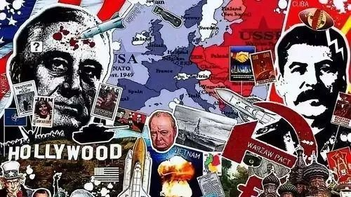
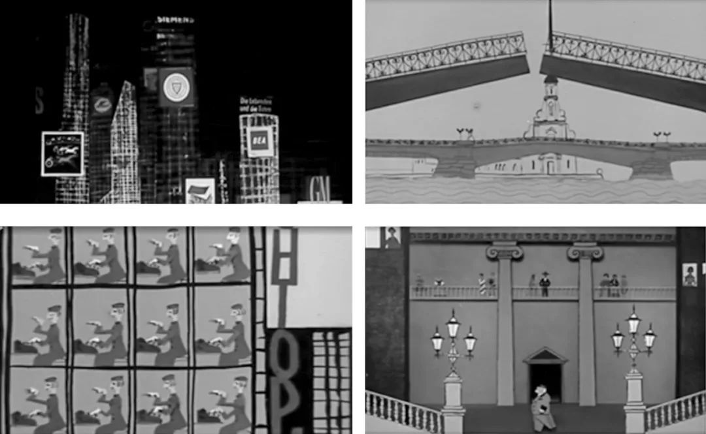
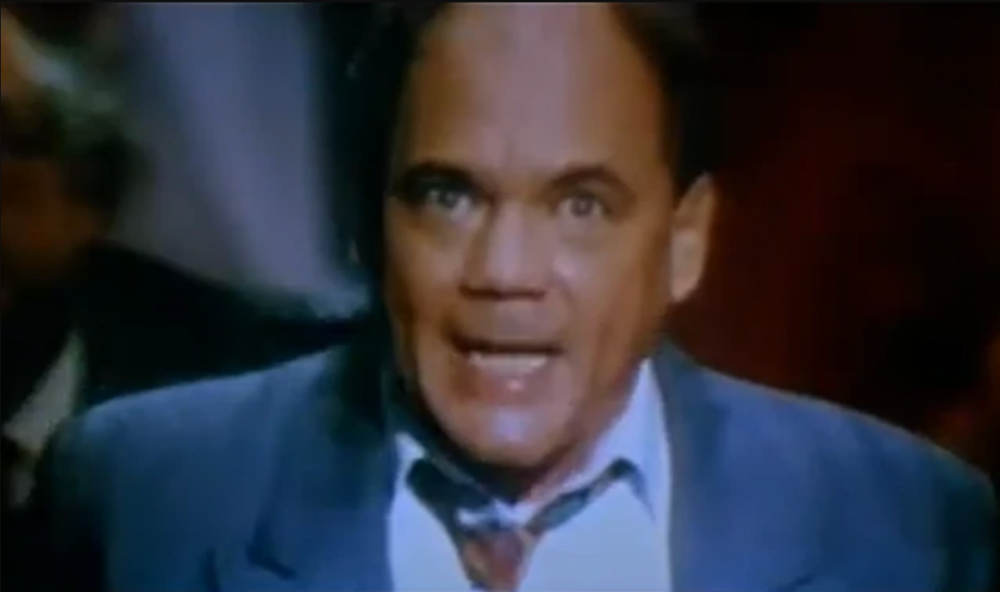
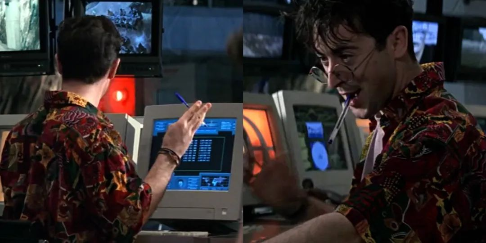

收录于合集

导读
新冠疫情爆发后，中国人在美国等西方国家备受歧视和欺凌，而俄乌冲突爆发后，俄罗斯被欧美国家制裁成潮。这次西方世界的集体“恐俄症”，其实 与西方渲染的“中国威胁论”如出一辙。西方国家通过主流媒体以及文娱产业进行意识形态渗透，为特定国家打上标签，对其进行抹黑、造谣、攻击，对外输出他们所谓的“民主自由”。
本文以美苏冷战时期的电影宣传现象为研究对象，研究得出， 大众文化所创造的地缘政治深化直接塑造了特定社群对其他国家形象的想象，大众文化产品一方面向民众传播政治精英的地缘政治想象，另一方面向决策层反馈流行话语中的大众地缘政治想象。 以美苏文化产品为例，在苏联解体前后，美苏两国在大众文化层面进行了激烈的地缘政治交锋。在苏联的大众文化中，美国形象被各种可乐瓶、棒球、牛仔和摩天大楼等流行符号所表征，这些元素象征了西方大众文化中以金钱至上为代表的扭曲价值观，用于揭露美式生活方式背后美国的内政外交真相。 苏联解体后，美国失去了一个在自我民族认同和社会共识叙事中有价值的、具有神秘色彩的他者，其大众文化产品开始重新阐述、定义并强化这一“他者”形象。 当代美国大众文化中知名度最高的俄罗斯女性之一是漫威漫画角色“黑寡妇”，这类带有充满威胁、“性感女郎”和“疾病患者”的“黑寡妇”角色完美地支持了美国对俄罗斯的道德优越感，成为了西方文化软实力的重要推手。
今天的大众地缘政治在很大程度上仍以西方为中心，西方流行文化的全球传播在取得商业成功的同时，隐蔽地对外传播深藏于其中的地缘政治想象。 欧亚系统科学研究会特编发此文，供读者思考。文章原刊于《外交评论》2022年第1期，作者为中国海洋大学文学与新闻传播学院讲师。限于篇幅，有所删节，仅代表作者本人观点。
大众地缘政治想象中的身份政治与“他者”形象
——以美俄（苏）之间的大众文化形象建构为个案

▲ 图源：互联网
在“后真相”时代，大众文化产品能够借助其情感功能，以“非人化”、“奇观化”和“性别化”三种模式建构“他者”形象，并反向建构“自我”身份，塑造地缘政治想象。 在下文中，笔者将通过具体的案例分析，解读苏联解体前后美俄（苏）两国在大众文化层面的地缘政治交锋，探讨两国大众文化产品中“他者”形象的表征策略及其产生的现实影响。
**
**
1
** 文化冷战时期大众文化的“非人化”符号政治**
历史上的“美苏争霸”为我们观察大众文化中异化的“他者”形象提供了绝佳的素材。 冷战时期美苏两国的对抗是全方位的，以大众文化为主阵地的文化冷战是其中重要的组成部分。 根据夏普的研究， 从20世纪40年代中期开始，美国大众文化中的国家形象主要是通过对苏联的负面表征而反向建构的。 这一点对苏联来说同样适用，“被资本主义世界包围”的图景是冷战时期苏联大众文化的常态，这有助于证明“苏联式”生活方式和价值观的优越性，充分激发集体认同感，并通过无处不在的美国敌人形象的塑造来建构威胁。
在冷战时期美国的大众文化话语中，美国形象被各种流行符号所表征，比如可乐瓶、棒球以及万宝路广告中的牛仔等，而作为城市“空间符号”的摩天大楼也被普遍认为象征着美国式生活方式的核心价值。摩天大楼自19世纪末开始出现以来，不仅是美国经济实力和“大国审美”的象征，而且成为象征美国民族主义“崛起”的一个视觉符号。 摩天大楼的庞大规模代表了一种技术上的优越性，讲述了“美式价值观胜利”的故事，展现了“美国力量”，并且成为冷战时期西方民主优越性的一个宣传载体。而“美国式”摩天大楼也成为冷战时期苏联在大众文化领域“反美宣传”的重要“符号武器”。
1949年出台的《近期内加强反美宣传计划措施》加强了苏联大众文化中美国形象“他者化”的力度。该计划详细规定了苏联各大报刊杂志和广播电台的反美宣传内容， 确定了反美宣传中的37个主题，其中就包括“针对美国的非道德和兽性心理进行宣传”。该计划要求苏联作家协会、艺术事务委员会等机构创作文艺作品用于反美宣传，组织文艺界和科学界著名专家学者撰写揭露美国内政外交真相、特别是侧重暴露美国生活方式的文章。其中特别强调，苏联各界的反美宣传活动中必须广泛使用高尔基的作品。国家文学小说出版社被要求在五天之内出版一本高尔基描写美国的散文集，发行量50万册。
同时，苏联电影部（Госкино СССР）也被要求根据高尔基1906年逗留美国期间所写的短篇小说《黄魔之城》（Город желтого дьявола）制作一部电影。 在高尔基的这部小说中，纽约城被描绘为一座“只会赚钱的城市”，支配纽约整座城市和所有市民的唯一“魔鬼法则”就是“黄金”。 对于纽约城中的摩天大楼，高尔基有如下描写：“二十层高的楼房，黑暗无声的摩天大楼，矗立在海岸旁。方方正正，没有任何追求美丽的愿望，笨重的建筑阴沉地耸立着，令人生厌。每栋房子都能以它的海拔和丑陋，让人感受到一种傲慢。窗前没有鲜花，也看不到孩子……”
在高尔基笔下，摩天大楼所表征的纽约城没有鲜花和孩子——城市被剥夺了“人性”，而摩天大楼作为标记边界的符号，清楚地表征了苏联“自我”与美国“他者”之间的区别。 摩天大楼不再是“美国力量”的象征，而异化成了阴沉、丑陋的“黄金机器”。 之后，将摩天大楼描绘成贪婪、不人道、丑陋和剥削的美国形象的象征，成为苏联大众文化产品中一种“标配”。比如在苏联电影《荣耀法庭》（Суд чести，1949）中，苏联生物学家向美国商人泄露了敏感的国防科技机密。而在之后的荣耀法庭上，维列斯基院士对苏联知识界中某些人的所谓“世界主义倾向”大发雷霆，要求打碎美国间谍与苏联科学家建立联系的企图。这位院士指责“邪恶的美国人”威胁到了苏联的国家安全，声称必须要让这些美国人“坐在他们自己的摩天大楼里”，不能让他们在苏联的土地上阴谋得逞。而这部电影的海报也用明显的构图语言，将“自我”的克里姆林宫与“他者”的摩天大楼对立起来。
苏联动画电影《扭曲先生》（Мистер Твистер，1963）则同时建构了列宁格勒和纽约两座城市的不同形象，对比了两种不同的生活方式。影片描述了一位美国的种族主义者在列宁格勒的故事，这座城市中没有“专供白人”的酒店。在建构纽约形象时，影片选择了夜景——摩天大楼张牙舞爪地“抓向”夜空，上面贴满了不断闪着亮光的“资本主义”小广告，伴随着刺耳的爵士乐声音。而当主人公“扭曲先生”进入列宁格勒时，一座美丽、和平、宽敞、明亮的城市展现在荧幕上，人们在建筑边上从容走动，船舶游弋在涅瓦河上，伴随着悠扬的轻音乐。

▲ 《扭曲先生》中纽约（左）与列宁格勒（右）的对比。
在《扭曲先生》中，黑暗中的纽约城只有彩色的摩天大楼、汽车和各种品牌的广告，那里没有树木、河流，甚至没有“彩色”的人。纽约被表征为一个对人类充满敌意的、没有感情的巨型机器——与高尔基的《黄魔之城》形成了互文。 事实上，将他者表征为机器也是大众文化中“非人化”的一个重要技术手段。 如哈斯勒姆所说， 机器化的形式剥夺了他者群体的意志、个性、情感等一切主观性特征。 冷战时期，美苏两国的宣传机器都广泛使用“机器化”的话语策略——作为“红色机器”的苏联也是美国反苏宣传中的一个重要修辞策略。而在针对美国的“非人化”表述中，贴满广告的摩天大楼被用以标记美国社会的所有罪恶：在经济领域，摩天大楼代表了资本家对工人阶级的剥削；在社会领域，摩天大楼表征了资本主义社会的不平等以及种族主义（配合苏联政治宣传中“两个美洲”概念）；在政治领域，摩天大楼表征了华尔街巨头的独裁以及西方的帝国主义；而在文化领域，摩天大楼象征了西方大众文化中以金钱至上为代表的扭曲价值观。在苏联大众文化中，摩天大楼也剥夺了生活、工作于其中的美国人的人性，使其“机器化”。在《扭曲先生》的另一个场景中，纽约摩天大楼的横截面被展现出来，而每一层中都有无数一模一样的工作人员，坐在一样的办公室里从事一样的劳动。
2
** 后苏联时代西方大众文化中作为“奇观”的“俄罗斯恶棍”**
苏联解体后，欧亚大陆北部的“巴尔干化”挑战了“普通美国人”对这一地区的地理想象。对许多来自西方的“国际政治的偶然观察者”来说，似乎所有的苏联空间都被转化为一个新的、非苏联的俄罗斯。人们对于后苏联空间新独立的国家也抱有矛盾的态度：长期以来，这些国家被视为一个反美主义、反西方主义、反资本主义的“红色机器”的一部分，而几乎在一夜之间，它们似乎成为西方潜在的安全伙伴，甚至在90年代初，俄罗斯都一度被视为北约的候选成员国之一。但是，西方的军工复合体、学术界、媒体和娱乐业都在以各自的方式，反映出一种对福山所说的“历史的终结”的反感与抵抗。这种反感与抵抗的背后体现出“认同的逻辑”： 东欧剧变和苏联解体深深扰乱了美国的自我认同，动摇了美国在全球层面的军事与道德使命感，使美国失去了一个自我民族认同和社会共识叙事中有价值的、具有神秘色彩的他者。因此，重新阐述“民族认同神话”，重新定义、强化朗西埃所说的民族认同“主流叙事”，是冷战结束后美国面临的首要挑战。 与其接受“历史的终结”、寻找新的“反派”，继续利用与“俄罗斯”相关的他者叙事来维持美国民族叙事的完整性和延续性，无疑是更直接的选择。
当代西方大众文化产品中的俄罗斯反派是高度标签化和戏剧化的，这符合“奇观化”的特征——尽管这些反派形象不总是令人发笑，甚至有时还相当“恐怖”，但“命中注定”的失败结局还是赋予这些俄罗斯反派以“喜剧”的特征。最具代表性的俄罗斯反派形象是“复仇主义者”，以及与之相关的恐怖分子及无情的雇佣兵形象。 **美国电影《红潮风暴》 （Crimson Tide， 1995）使用了后苏联复仇主义者的典型形象，将整部电影笼罩在核战争的阴影之下。**在电影中，虚构的俄罗斯将军罗琴科率领“狂热的民族主义者”反抗俄罗斯中央政府，指责克里姆林宫“默许北约对高加索地区的干预”，威胁美国发动核打击。最终，美国副舰长亨特聪明地阻止了这场核灾难，避免了第三次世界大战的爆发。 《红潮风暴》所代表的电影类型，在建构“俄罗斯在后苏联时代继续对美国构成明确而现实的威胁”这一社会观念的过程中起到了关键作用。 苏联解体后，民主党人克林顿当选美国总统，而共和党人则在1994年国会中期选举中赢得国会参众两院多数席位，40年来第一次实现全面支配国会的政治目标。克林顿上台后曾提出要把振兴美国经济作为其执政的首要目标，认为要充分利用冷战结束给美国带来的“和平红利”，其中包括有计划地减少美国国防开支。但美国民众对于俄罗斯的“惯性恐惧”支持了共和党主导的国会政策，最终使克林顿充分利用“和平红利”的努力付诸东流——美国并未按计划大幅削减战略军事开支，而是保留了大部分冷战遗留的战略资产，防止俄罗斯的“复仇”。

▲ 《红潮风暴》中虚构的后苏联复仇主义者、俄罗斯将军罗琴科。图源：互联网
“9·11”事件之后，后苏联的复仇主义者在美国的大众文化中披上了一层后现代外衣，“大众地缘政治希望通过提供壮观的场景和世界末日的预言来建构现实并散播恐慌感”。在美剧《24小时》的第六季中，邪恶的德米特里·格雷登科将军雇佣伊斯兰激进分子，企图通过挑起华盛顿与伊斯兰世界的“文明的冲突”，从而实现欧亚大陆上俄罗斯帝国的复兴。剧中的格雷登科表达了对于“复仇”的迫切渴望：“我们的国家输掉了冷战，因为我们害怕对美国人使用核武器。今天我们要纠正这个错误，而阿拉伯人将承担所有责任。” 这样的情节很容易在美国民众的认知中勾勒出一个“苏联—伊斯兰”的混合体，因为对于核武器的恐惧巧妙地联结了“冷战”与“反恐战争”两大地缘政治脚本，影响了民众对于美国与俄罗斯、阿拉伯世界的关系以及美国在中东地区利益的地缘政治态度，加深了本体安全的紧迫感。 而近年来美国在中东的军事活动以及俄罗斯与西方关系的持续恶化，在一定程度上也体现出美国精英与大众在地缘政治想象层面达成的共识。
美国政治语境中另一个“大受欢迎”的地缘政治脚本是关于俄罗斯黑客对美国发动网络攻击并干预美国大选。 在2016年美国大选中，民主党认为“俄罗斯黑客”给了特朗普入主白宫的机会。基于此，美国国内出现了罕见的激烈党争并通过国会立法对俄罗斯实施严厉制裁。而在2020年12月，美国又宣称有黑客侵入了多个关键政府部门和商业机构的电脑，导致约1.7万名关键客户信息被曝光，此次黑客攻击又被美国国家安全局归咎为“俄罗斯政府支持的恶意网络行为”。而这样的话题在美国总是引发爆炸式舆论反响，部分需归功于几十年来西方大众文化中对苏联/俄罗斯人的一个刻板印象——“疯狂科学家”和“技术狂人”。早在苏联解体之初，美国大众文化就在一定程度上预言了“通俄门”，将俄罗斯建构为新数字威胁的来源。比如美国导演马丁·坎贝尔的007系列电影《黄金眼》中的角色鲍里斯·格里申科——“一个才华横溢的计算机程序员和黑客，也是一个背后捅刀子、傲慢的、厌恶女人的人”。 在西方大众的地缘政治想象中，格里申科象征着定型化的地缘政治敌人框架由“克格勃特工”向“技术狂人”转变， “这为那些仍然寻找新方法来延续‘俄罗斯威胁’的人们提供了新思路。”

▲ 技术狂人格里申科。图源：互联网
**
**
3
** 性感、危险与创伤：当代西方大众文化中的俄罗斯女性**
美国研究学者切斯曾指出，美国国家叙事的核心是“浪漫主义”，即美国文化习惯于“通过融入浪漫元素来讲述自己的命运，定义自己的身份”。如前文所述， 这种国家叙述的“浪漫性”隐喻了西方深层文化结构中的“帝国秩序”，体现在“自我男性”对“他者女性”的征服以及“自我女性”与“他者女性”的严格区分这两大性别叙事结构中。
当代美国大众文化中知名度最高的俄罗斯/苏联女性之一是漫威漫画角色“黑寡妇”。2021年，随着同名电影公映，该超级英雄在全球又一次掀起热潮。 首先，“黑寡妇”的形象设计反映出美国大众文化对俄罗斯（苏联）的地理想象。 “黑寡妇”红色的头发清晰指向了“红色的苏联”，而在美国的大众文化中，对于共产主义者的一个流行称谓也是“Reds”。而“黑寡妇”的受训地点是一个名为“红屋”的苏联军事机构——这很难不让人联想起“红场”。在红屋中，黑寡妇同其他27名女特工从少女时代就开始受到严酷训练，包括通过化学手段加强身体机能，以及“通过植入虚假记忆以保持其忠诚”。这样的设定一方面符合西方对“苏联式恐怖政治”的“期待视野”，同时为“黑寡妇”这一角色打上受迫害、被欺骗的创伤标签。
其次，“黑寡妇”本名娜塔莎·罗曼诺夫，这个姓氏以及她曾经作为苏联首席芭蕾舞演员的经历，同样暗示了非常重要的意识形态和地缘政治想象。 罗曼诺夫王朝是统治俄罗斯的第二个也是最后一个王朝，王朝末代沙皇尼古拉二世于1918年7月被处死。罗曼诺夫这个姓氏与沙皇俄国终结、社会主义苏联诞生之间的关联，最初通过1956年的好莱坞电影《阿纳斯塔西娅》（Anastasia）在美国的大众文化记忆中被建构，并在半个世纪之后通过1997年的同名动画电影再次被唤醒。而芭蕾舞演员的职业则为该角色关联了俄罗斯传统文化。芭蕾舞与俄罗斯历史上的宫廷文化有着密切的联系：在20世纪之前，俄罗斯宫廷中的芭蕾舞表演与其军事文化相关，芭蕾舞的表演者包括士兵和农奴，其整齐划一的表演形式隐喻了军事编队的实力展示功能。虽然这种现象在20世纪之后已经消失，但俄罗斯芭蕾舞训练中对于集体纪律的强调、对舞者极端的身体和精神训练，已经成为美国大众文化对于俄罗斯文化的一种刻板印象，与美国式追求个性的艺术观念形成对照。
最后，“黑寡妇”这一代号、她的红色漏斗状标志以及细长的四肢、灵活的动作使得该角色与北美的“黑寡妇蜘蛛”形成了互文。 雌性黑寡妇蜘蛛有剧毒，并且有在求偶之后吃掉雄性蜘蛛的习性。这一暗示意味着该角色充满威胁，尤其是对“正义的西方男性”而言。因此，这样一位“起源可疑”、充满威胁的危险女性，增强了“性别征服”叙事的戏剧性。“黑寡妇”最终成为“复仇者联盟”的一员，且在这一过程中与“钢铁侠”、“鹰眼”、“绿巨人”、“美国队长”等多位主角发生“浪漫”情节，这样的性别叙事形成了巨大的戏剧张力，也隐喻了“我—他”之间不平衡的权力关系。
▲ 漫威漫画角色“黑寡妇”。图源：互联网
借用女性主义文化研究学者威廉姆斯的观点， “黑寡妇”这一角色激活了美国大众文化中存在的两种俄罗斯国家的“女性隐喻框架”——“性感女郎”和“疾病患者”。 作为性感的女性杀手和受过创伤的病人，“黑寡妇”这类角色完美地支持了美国对俄罗斯的道德优越感。与前文分析的“毁容”、“丑陋”、“身体疾病”等传统模式不同，“黑寡妇”的“病态”体现在精神层面——与其“美丽的身体”形成对比。这种转变与20世纪90年代以来美俄两国的政治气候相吻合。20世纪90年代，“身体残疾”的隐喻常被用来证明美国对于俄罗斯发展的援助是合法的：俄罗斯正遭受某种“残疾与痛苦”（以“身体的残疾”隐喻“苏联的解体”），而美国则是“仁慈的医生”，帮助俄罗斯免受痛苦。进入21世纪，随着俄罗斯政治进入“普京时代”，俄罗斯的国家实力逐渐恢复并重新成为西方的“威胁”，这种“身体残疾”的隐喻已经不合时宜。为了继续支持美国的“道德优越感”，美国大众文化重新概念化了俄罗斯的“创伤”：身体的残疾转变为“创伤后应激障碍”（PTSD）——在经历重大创伤性事件之后，尽管身体上没有任何症状，但精神上仍然受到过去记忆的持续影响，恰如曾被修改记忆、精神状态不稳定、行动受到干扰的“黑寡妇”。
讽刺的是，美国电影《黑寡妇》在俄罗斯还反响不错，首映后连续两周夺得全俄票房冠军。 这再次印证了大众地缘政治的特点：神话、叙事、刻板印象隐藏在大众文化产品的外壳之下，以“娱乐”的方式打破政治精英对于国际政治话语空间的垄断，在大众文化消费中推进地缘政治想象的“隐性建构”。
**
**
4
** 结 语**
在“后真相”时代，大众文化产品在精英与大众之间建构了一个地缘政治想象的循环，其在日常社会互动中生产的叙事、神话与刻板印象，除了完成观念层面的“我—他”身份建构之外，也反映在现实层面的国家政策与国际关系中。为了维持“自我”身份的稳定性，大众文化产品中的“他者”形象往往具有某种“确定性”。西方娱乐工业已形成固定的大众文化生产模式，依赖一些固定“模板”，批量生产“类型化”的“他者”。 尤其是全球化时代，大众文化产品中建构的“他者”形象往往遵循“非人化”、“奇观化”和“性别化”等模式，建构服务于特定意识形态的他者地缘政治想象，并在全球文化市场广泛传播。 历史上的西方地缘政治学是西方帝国主义全球扩张的同谋，显然，今天在全球流行的西方大众文化产品具有类似的地缘政治功能。
基于本文的分析，与精英层面的国际政治话语互动不同，大众文化产品中的地缘政治话语具有“隐蔽性”特征。 大众地缘政治想象往往不会立时得到“地缘政治对手”的回应，且其传播过程具有“润物细无声”的特点。在地缘政治的大众文化竞争中，真正发挥作用的是“漫威宇宙”这样看似“自说自话”的“爆款作品”，它们与“粉丝文化”合力，是西方文化软实力的重要推手。比如《美国队长2：冬日战士》这部具有明显“抹黑苏联”意识形态倾向的电影，于2014年克里米亚危机时期在俄罗斯上映，迪士尼旗下的漫威公司选择将该电影的俄罗斯公映版更名为《第一复仇者：另一场战争》（Первый мститель：Другая война），以尽量减少观众“对美式超级英雄爱国主义倾向的反感”。最终，该电影在同期俄罗斯影院取得了票房冠军——俄罗斯观众并未深究“另一场战争”的具体意味，美式流行文化在后苏联土地上取得商业成功的同时，隐蔽地对外传播了深藏于其中的地缘政治想象。
如同大众文化本身一样，今天的大众地缘政治在很大程度上仍然是以西方为中心的。西方大众文化在全球文化生产活动中占据主导地位，蕴含于大众文化产品中的意识形态、权力结构同样以西方为主导。因此， 当前中国与西方围绕国际话语和国家形象的竞争，不仅要关注顶层设计，还需关注大众文化层面的话语交锋。 中国必须充分认识到大众文化的地缘政治功能，重视对大众文化产品内容的引导，建设属于中国自己的大众文化品牌，利用大众文化产品讲好中国故事。
文章为欧亚系统科学研究会编辑
文章观点不代表本平台观点